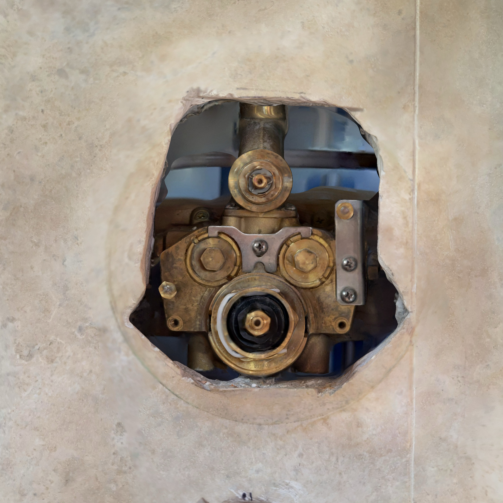
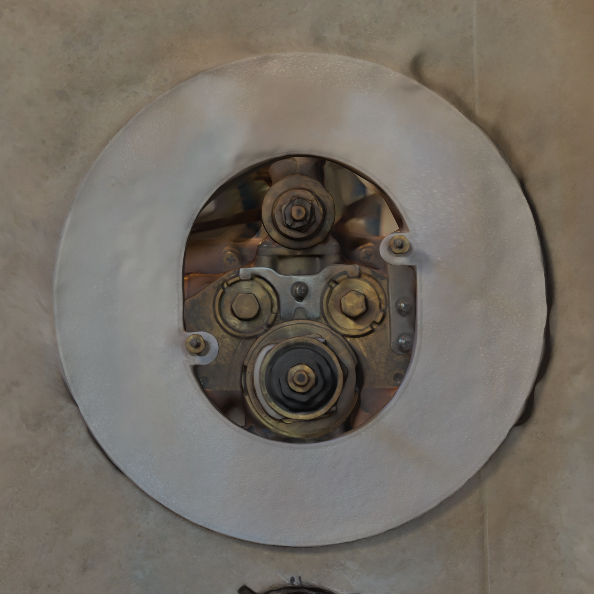
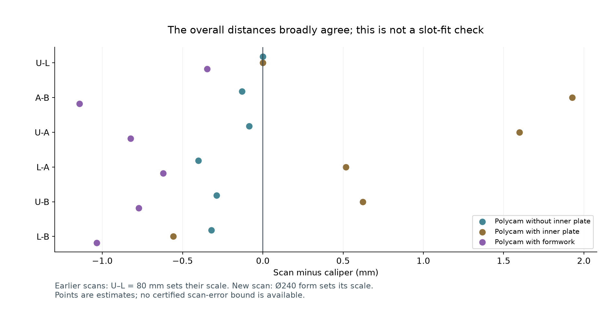
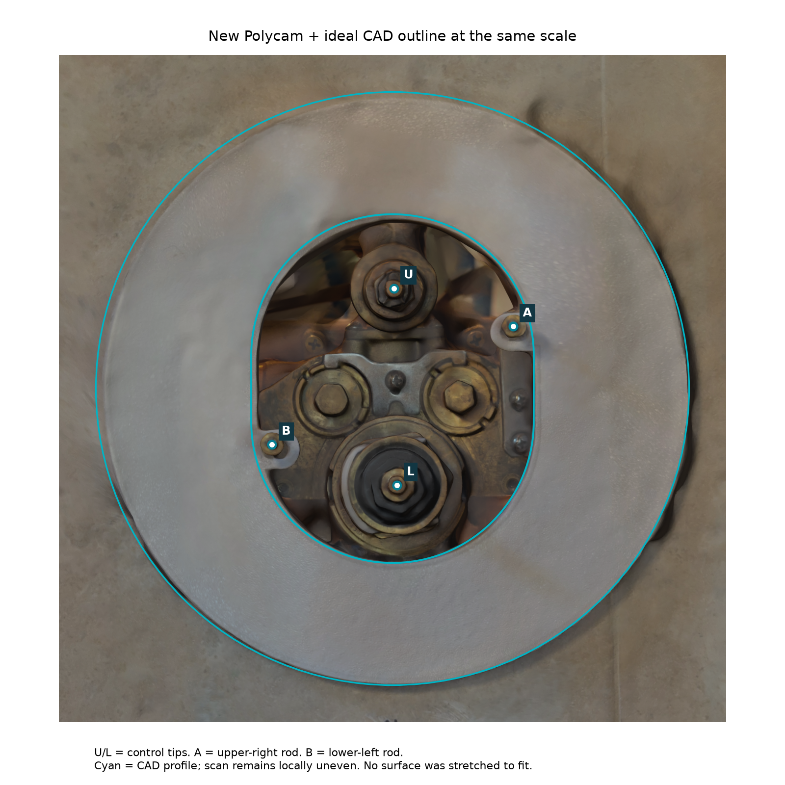
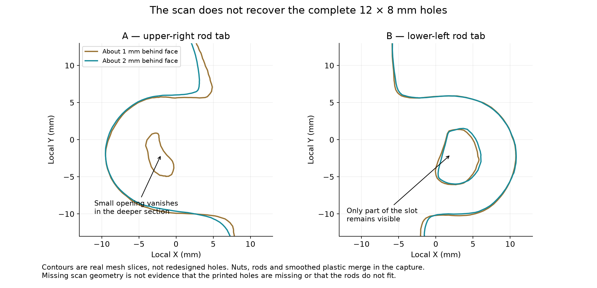
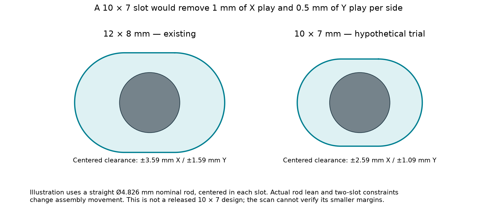

Shower repair · FS01 · 19 October 2026
The new scan supports the overall layout.
It does not establish a close bolt fit.
Your printed form is now a useful independent scale reference. The new tip-distance estimates are about 0.3–1.1 mm below your calipers. That is encouraging for the broad layout, but the scan blurs the very small features needed to tighten the slots.
Recommendation: keep the existing 12 × 8 mm slots and the current form as the baseline. If less play is useful, try removable locating inserts or small gauges on this form before buying another full print. This assessment requests no new caliper measurements and does not release a tighter form.

Polycam without inner plate
Original capture; earlier primary registration remains unchanged. Polycam with inner plate
Polycam with inner plate
Separate diagnostic; reflective metal and hidden rod details limit comparison.
Polycam with formwork
Scale from the original Ø240 form, assuming your print matches the CAD exactly.Compare the same six 3D tip distances
U is the upper control, L the lower control, A the upper-right rod and B the lower-left rod. Click a pair to highlight its endpoints. Each distance runs through 3D space; it is not a dimension in the plane of the form or factory plate.
U–L: upper to lower control
The line is a front projection for identification. The calculation includes the endpoints’ different depths.
Caliper distinction: your loose inner-plate measurements were coplanar and remain the stronger source for its hole layout. R006 gives a 113.21 mm planar separation between the factory holes; that must not be replaced by the 109.8 mm distance between projecting rod tips.

The original scan agrees within about 0.4 mm on the five distances not used for scale. The inner-plate scan differs by as much as 1.9 mm. The new formwork scan differs by as much as 1.1 mm. These are observed discrepancies, not machining tolerances.
What the known print tells us about the scan
Following your instruction, the print is assumed exact. Therefore the differences below belong to the scan, the fitted feature or the way its blurred edge is sampled. I have not stretched the scan differently in different directions to force agreement.

The cyan outline is the CAD at the form-derived scale. The print and scan are not silently warped to coincide.The fitted front face has about 0.48 mm RMS departure from a plane; the sampled outside rim has about 1.07 mm RMS radial departure from a circle. These quantify this reconstruction only. They do not establish a maximum physical error.
Why this cannot yet justify tighter locating holes
The whole form can look convincing while the slots and rods remain poorly reconstructed. In the mesh, the visible rods are only about 4.1 mm at A and 3.2 mm at B, compared with the identified stud’s approximately 4.83 mm nominal major diameter. Treating those skinny scanned rods as real would create falsely generous clearance.

The rod/nut covers part of each slot, and photogrammetry merges nearby surfaces. These sections cannot supply a reliable slot center or the complete shaft clearance at the 3 mm-thick tab.
Separately, the scan puts the opening’s center about 2.0 mm away from the outer circle’s center, although the exact CAD makes them concentric. Choosing one or the other as the alignment reference would move the inferred slot location by more than the clearance we are trying to remove. Averaging more decimal places would not resolve that conflict.

A modest change still needs a local trial: 10 × 7 mm removes just 0.5 mm per side vertically, which this scan cannot reliably verify. Tip spacing alone also misses rod lean and the insertion path.
The practical next step
- Use the current form as the master trial. Its placement on both rods is captured. Full seating, unforced removal and repeatability are separate physical checks.
- If play matters, test small removable locators first. A sacrificial insert/gauge can be tried against the actual rods and existing slots without paying for another complete face and collar. An insert concept still needs its own printable geometry and retention/release review.
- Only then transfer the proven fit into a new form. Keep the broad control opening and collar geometry unless an actual interference is found. Locator tabs remain alignment aids; repair loads need independent padded bracing.
No full measurement survey is requested. This is a recommendation for the next dry-fit experiment, not a claim that the repair is sealed or ready for filling.
Method, sensitivity and preserved evidence
The raw ZIP is preserved unchanged and SHA-256 checked. A robust plane is fitted to the broad front annulus; a complete outer rim section sets one uniform scale. The opening is fitted separately with the two tabs excluded. Original scan registration and accepted calipers are untouched.
Controls use a 2 mm cap band. Rod tips use 1.5 mm: the upper-right 2 mm band reaches the enlarged nut and misleadingly improves agreement with your caliper. That larger-band result was deliberately not selected. This is feature selection, not a fit to your numbers.
Varying cap-band choices and the sampled rim section from roughly 2 to 6 mm behind the face produces the ranges below. The deeper rim merges toward the wall. These ranges are method sensitivity, not confidence intervals or guaranteed bounds.
| 3D pair | New-scan sensitivity, mm |
|---|
| U-L | 77.8–79.7 |
|---|
| A-B | 105.9–108.7 |
|---|
| U-A | 49.5–50.8 |
|---|
| L-A | 77.7–79.6 |
|---|
| U-B | 78.2–80.4 |
|---|
| L-B | 52.3–53.7 |
|---|
Other limitations: a later capture may show a different end-nut surface or adjustment; hidden shaft axes and the complete insertion sweep are not recovered. The two loose reflective plate scans are component references, not additional installed tip measurements.
Full calculations and source hashes · Comparison CSV · Separate Blender inspection · Preserved original Polycam ZIP · Executed audit
Rebuild: ./project assess-formwork-scan. CAD and previous print packages remain unchanged.